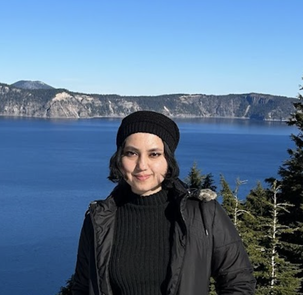

Hi, I’m Kritika
I’m an HCI researcher, designer and writer exploring the intersections of disability, technology and embodiment.
Re-imagining my own neurodivergent Barbieland. 💖✨
Now: Presenting my research at CHI 2025, reflecting on neurodivergent joy, and developing a closer relationship with the ground (i.e, walking barefoot more).
🌱 What’s Coming + Ways to Collaborate
I’m currently working on Neurodivergent Embodiment — exploring how technologies can meaningfully support the ways neurodivergent people experience and move through the world.
I'm also working on alternate media to creatively explore and communicate my research.
I’m always open to collaborations, co-writing, and thoughtful conversations about neurodivergence, disability, care, and design justice. Let’s talk!